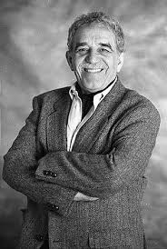
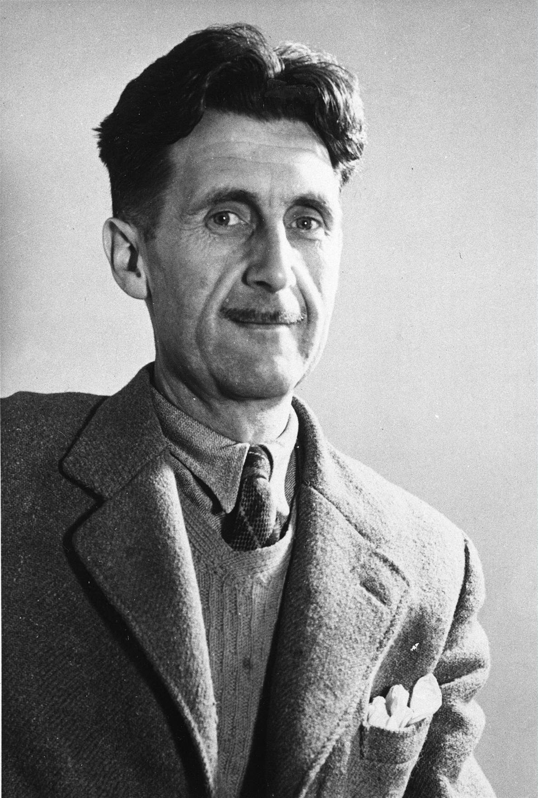
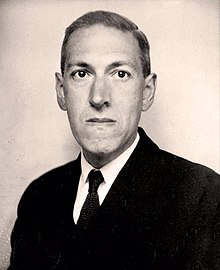

¿Por qué leer?
Leer es mucho más que un pasatiempo; es una herramienta poderosa que nos permite viajar a nuevos mundos, adquirir conocimientos y entender diferentes perspectivas. A través de los libros, no solo desarrollamos nuestra capacidad de analizar y comprender, sino que también estimulamos nuestra creatividad y empatía. Leer nos conecta con ideas, culturas y experiencias que de otro modo estarían más allá de nuestro alcance. En este espacio, te invitamos a explorar lecturas que te inspirarán y te acompañarán en tu viaje de crecimiento personal y aprendizaje continuo.
Por ello, te invitamos a visitar nuestro sitio web, donde encontrarás "El mundo de los Libros", un lugar perfecto para cualquier lector. Ya seas un novato que busca sumergirse en este nuevo mundo o un lector experimentado en busca de tu próximo libro, tenemos algo para ti.
Recomendaciones de Libros
-
Orgullo y Prejuicio - Jane Austen

Orgullo y Prejuicio de Jane Austen es un clásico atemporal que explora temas de amor, clase y crecimiento personal. La ingeniosa e independiente Elizabeth Bennet choca con el orgulloso Sr. Darcy, pero a medida que aprenden más el uno del otro, sus juicios iniciales se ven desafiados. Es una lectura obligada para quienes disfrutan de una aguda crítica social envuelta en una historia romántica.
-
Perfume - Patrick Süskind

El Perfume de Patrick Süskind es una historia oscura y fascinante ambientada en la Francia del siglo XVIII. Sigue la vida de Jean-Baptiste Grenouille, un hombre con un sentido del olfato extraordinario pero sin olor propio. Obsesionado con crear la fragancia perfecta, recurre al asesinato. Este thriller psicológico explora temas de obsesión, identidad y el poder del olfato de una manera inquietante e inolvidable.
-
La insoportable levedad del ser - Milan Kundera

La insoportable levedad del ser de Milan Kundera es una novela filosófica que ahonda en el amor, la política y la condición humana. Ambientada en la Checoslovaquia ocupada por los soviéticos, la historia transita las vidas de Tomas, Tereza, Sabina y Franz mientras luchan con la libertad personal, el compromiso y el peso de sus decisiones. Una profunda reflexión sobre la existencia que combina romance, existencialismo e historia en una narrativa que invita a la reflexión.
-
Norwegian Wood - Haruki Murakami

"Norwegian Wood" de Haruki Murakami es una conmovedora novela de formación que explora el amor y la pérdida en el Tokio de los años 60. La historia sigue a Toru Watanabe mientras navega por sus sentimientos hacia dos mujeres muy diferentes, lo que lleva a profundas reflexiones sobre la memoria y el impacto de la tragedia en la juventud.
-
Los siete maridos de Evelyn Hugo - Taylor Jenkins Reid
"Los siete maridos de Evelyn Hugo" de Taylor Jenkins Reid es una cautivadora historia sobre la vida glamurosa y escandalosa de la icono de Hollywood Evelyn Hugo. A través de una serie de entrevistas, Evelyn cuenta sus siete matrimonios y las complejidades del amor, la fama y la identidad. Esta novela ofrece una rica exploración sobre lo que significa ser una mujer en el ojo público.
Para más recomendaciones, haz clic aquí.
Autores Famosos
| Autor | Imagen | Descripción | Libros destacados |
|---|---|---|---|
| Gabriel García Márquez |  | Gabriel García Márquez fue un novelista colombiano y ganador del Premio Nobel conocido por su maestría en el realismo mágico. Su narración combina lo extraordinario con lo cotidiano, haciendo que sus personajes y escenarios sean inolvidables. |
|
| George Orwell |  | George Orwell fue un autor y periodista británico conocido por sus puntos de vista críticos sobre el totalitarismo y la injusticia social. Sus obras siguen siendo muy relevantes y continúan provocando reflexión y discusión. |
|
| Stephen King | Stephen King es un maestro del terror y la ficción, habiendo escrito numerosas novelas que cautivan a los lectores de todo el mundo. Su habilidad para crear atmósferas inquietantes y personajes complejos lo ha establecido como un icono en el género del horror. |
|
|
| Haruki Murakami |  |
Haruki Murakami es un escritor japonés que ha conquistado al mundo con sus obras introspectivas que exploran el vacío existencial, la alienación y los misterios del amor. Sus narrativas a menudo combinan lo surrealista con lo cotidiano. |
|
| H.P. Lovecraft |  | H.P. Lovecraft fue un escritor estadounidense conocido por su creación del subgénero de horror cósmico, donde lo desconocido y lo incomprensible toman el primer plano. Sus historias de horror psicológico han dejado un legado perdurable. |
|